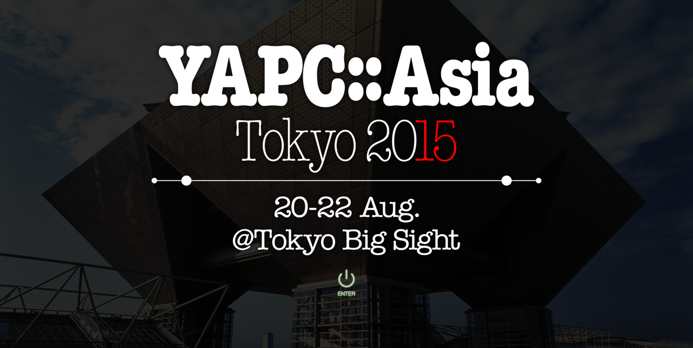

The Final YAPC::Asia Tokyo

The Final YAPC::Asia Tokyo
Or, One Last Spectacle You Should Not Miss
We just announced the dates to YAPC::Asia Tokyo 2015, and that this is going to be the LAST YAPC::Asia that we will be holding. I’m coming out of retirement as YAPC organizer to run this one final show.
To be clear what “last YAPC::Asia” means: (1) YAPC::Asia is independent of other YAPCs such as YAPC::NA, YAPC::EU, etc, so this does not affect them. (2) Anybody is free to hold their own YAPC::Asia, but this just means we (Japan Perl Association and myself) will not be organizing it anymore.
We have learned from our previous YAPCs, and on this final one we will try to rectify the problems that our foreign attendees faced.
- First of all, we are going to do something about the capacity of the venue: We’ve secure Tokyo Big Sight, which can hold almost 2000 people.
- We’re also trying to secure interpreters for as many talks that we can afford — and we think we can probably provide professional real-time interpretation for about half of our talks.
- We are also trying to secure some hotel rooms for foreign guests so that you can save on the expenses (we’re not sure yet, but we’ll see).
We are also planning to host a slew of special guests to let you enjoy the show even if you’re not a hardcore Perl user. Remember: YAPC::Asia Tokyo is a conference for engineers, not a conference about one particular language. I promise you it’s going to be AMAZING!
I just don’t see any reason for all of your folks living outside of Japan to miss this last opportunity to be part of this great YAPC! For now please mark you calendars, and be ready to book your flights when we have more details!
We hope to see you guys at our last, and hopefully best, YAPC::Asia Tokyo.